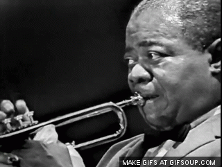

Jazz is a kind of music in which improvisation is typically an important part. In most jazz performances, players play solos which they make up on the spot, which requires considerable skill. There is tremendous variety in jazz, but most jazz is very rhythmic, has a forward momentum called "swing," and uses "bent" or "blue" notes. You can often hear "call--and--response" patterns in jazz, in which one instrument, voice, or part of the band answers another. Jazz can express many different emotions, from pain to sheer joy. In jazz, you may hear the sounds of freedom-for the music has been a powerful voice for people suffering unfair treatment because of the color of the skin, or because they lived in a country run by a cruel dictator.
The origin of the word "jazz" has resulted in considerable research, and its history is well documented. It is believed to be related to "jasm", a slang term dating back to 1860 meaning "pep, energy". The earliest written record of the word is in a 1912 article in the Los Angeles Times in which a minor league baseball pitcher described a pitch which he called a "jazz ball" "because it wobbles and you simply can't do anything with it".
As jazz spread around the world, it drew on national, regional, and local musical cultures, which gave rise to different styles. New Orleans jazz began in the early 1910s, combining earlier brass-band marches, French quadrilles, biguine, ragtime and blues with collective polyphonic improvisation. In the 1930s, heavily arranged dance-oriented swing big bands, Kansas City jazz, a hard-swinging, bluesy, improvisational style and Gypsy jazz (a style that emphasized musette waltzes) were the prominent styles. Bebop emerged in the 1940s, shifting jazz from danceable popular music toward a more challenging "musician's music" which was played at faster tempos and used more chord-based improvisation. Cool jazz developed near the end of the 1940s, introducing calmer, smoother sounds and long, linear melodic lines.
